Mineral Exploration Software
SpectraXplore™ is an integrated exploration platform combining multispectral & hyperspectral analysis, alteration mapping, DEM/structural analysis, mineral identification, statistical modelling, and geochemical–geophysical integration — in one workspace.
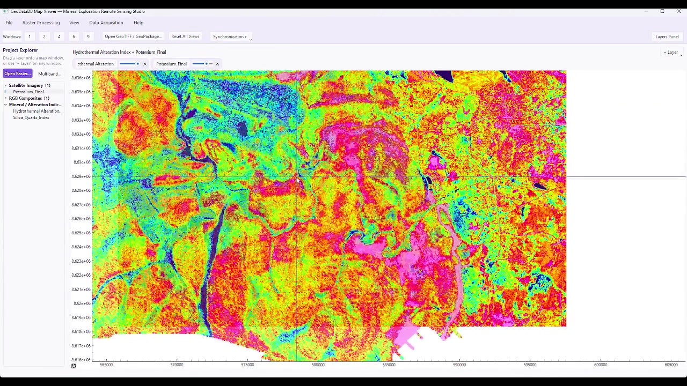
The Pipeline
One continuous workflow — no exporting between five different tools to get from a satellite scene to a ranked drill target.
Output → Ranked, defensible exploration targets
Platform
Everything an exploration geologist currently stitches together across separate satellite, spectral, GIS and statistics tools — built to work as a single pipeline.
Access and process high-quality satellite and terrain datasets within a unified exploration workflow.
3,000+ minerals, materials & vegetation targets, matched with Spectral Angle Mapper and related spectral algorithms.
Map the exploration indicators that matter: iron oxides, hydrothermal alteration, clays, silica, and carbonates.
Turn terrain into geological evidence: elevation, slope, aspect, and automatic lineament & density extraction.
Extract hidden information from multispectral datasets with PCA, factor and cluster analysis, and classification.
Combine geological evidence into ranked exploration targets with Weight of Evidence and Bayesian networks.
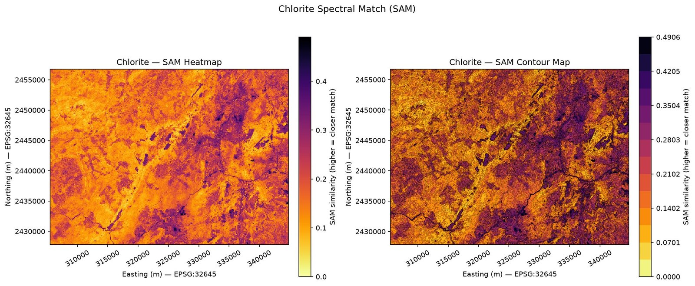
Phyllosilicate — propylitic alteration indicator
Spectral Reference Library
From minerals and alteration minerals to materials and vegetation, SpectraXplore™ provides a comprehensive spectral reference library for automated and semi-automated mapping — matched against your imagery with Spectral Angle Mapper.
Terrain & Structure
Terrain is more than elevation. SpectraXplore™ transforms DEM data into structural and geomorphological evidence — slope, ruggedness, hillshade, and automatically extracted lineaments — ready to feed directly into your prospectivity model.
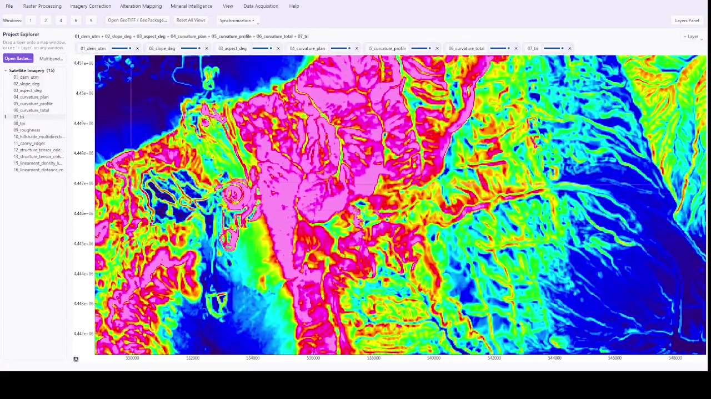
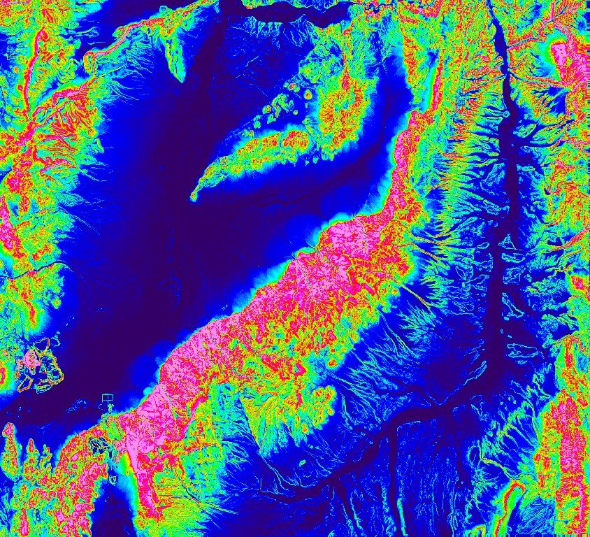
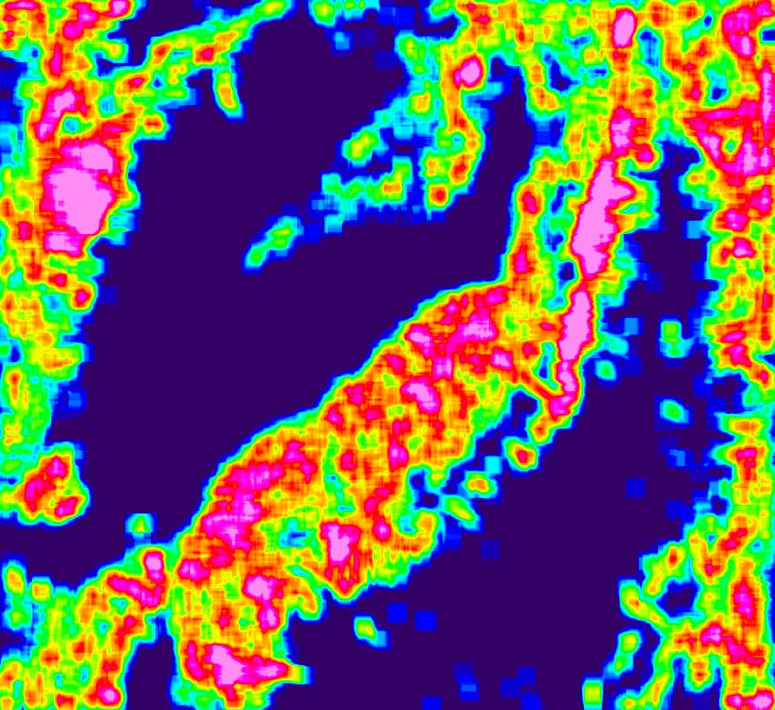
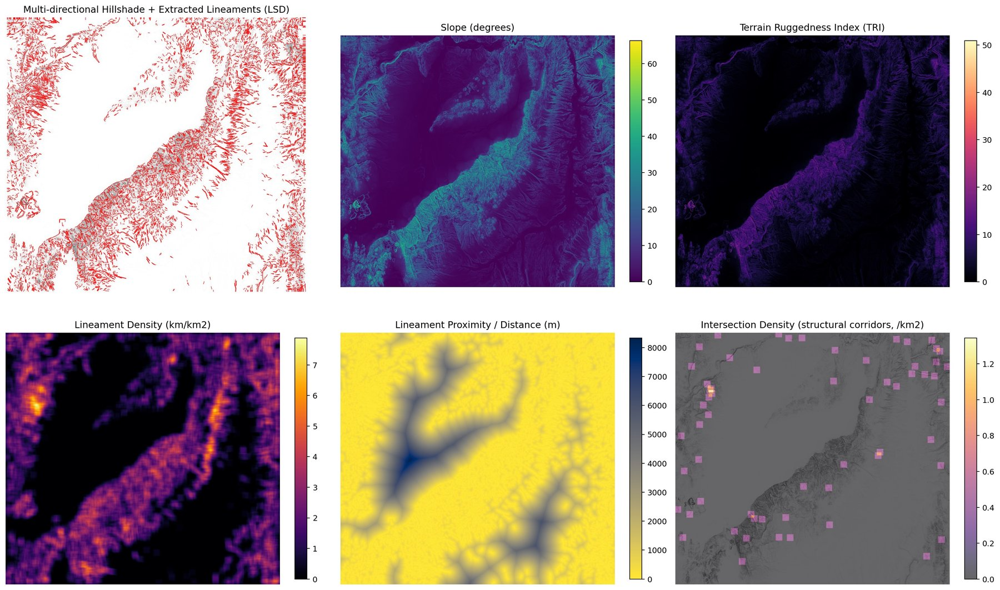
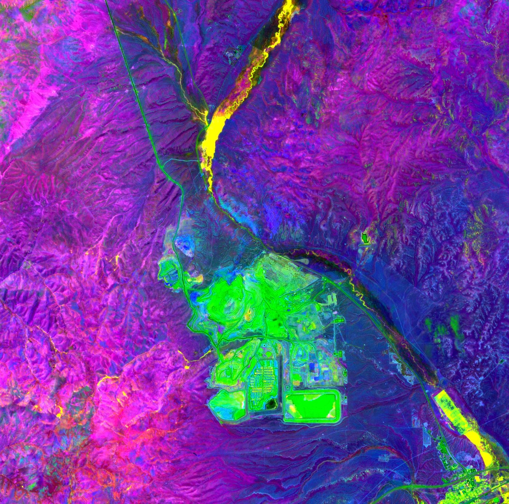
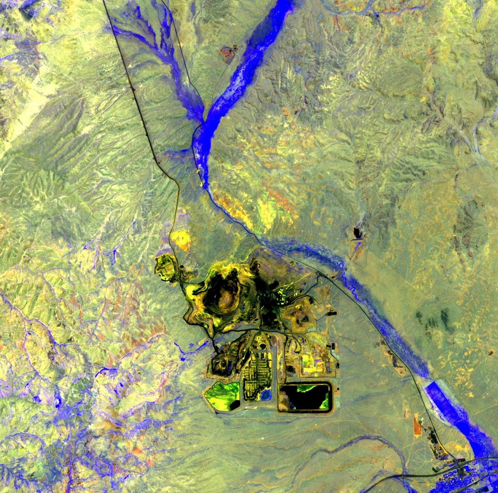
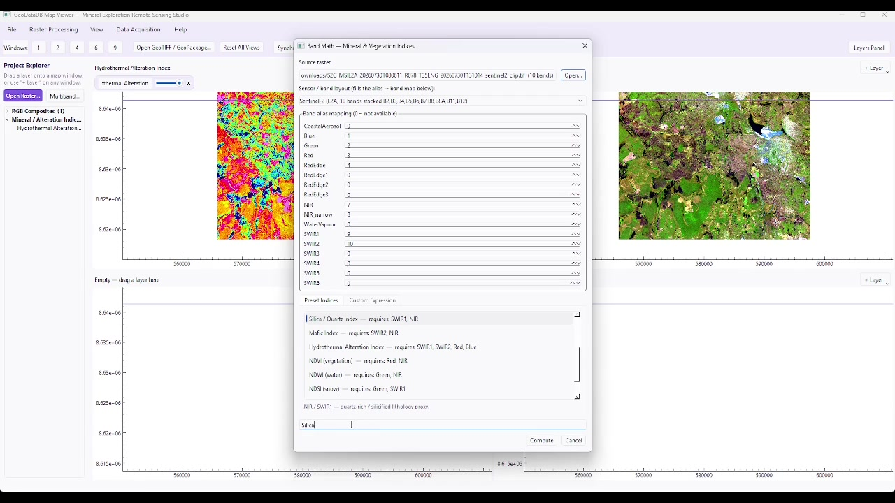
Alteration Mapping
Map the diagnostic indicators exploration teams look for first — iron oxides, hydrothermal and argillic alteration, silica/quartz and carbonates — straight from freely available Sentinel-2 and ASTER scenes.
Integrated Exploration
Bring remote sensing, geophysics and geochemistry into a single evidence base — then let Weight of Evidence and Bayesian modelling do the ranking.
SpectraXplore™ In Action
Bring in Sentinel-2, ASTER and DEM data, stack bands and pan-sharpen in a few clicks.
Run preset or custom band-math expressions, then match against the spectral library with SAM.
Generate slope, hillshade and lineament products, and quantify structural corridor density.
Fuse remote sensing, geophysics and geochemistry evidence into one prospectivity surface.
Field Case Study
A worked example: known-deposit imagery is processed, draped over terrain, and cross-checked against mineral occurrence records.
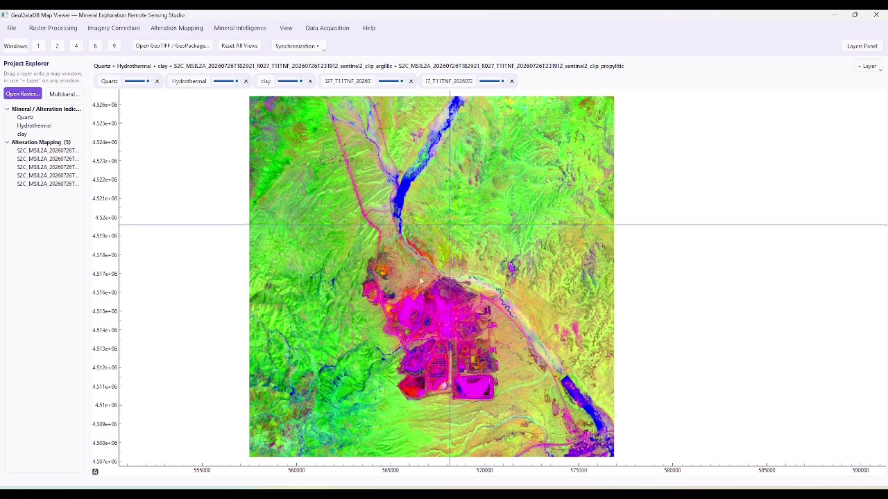
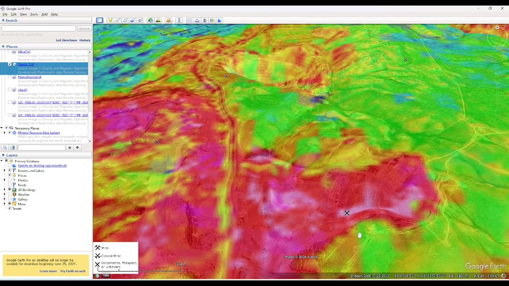
Inside SpectraXplore™
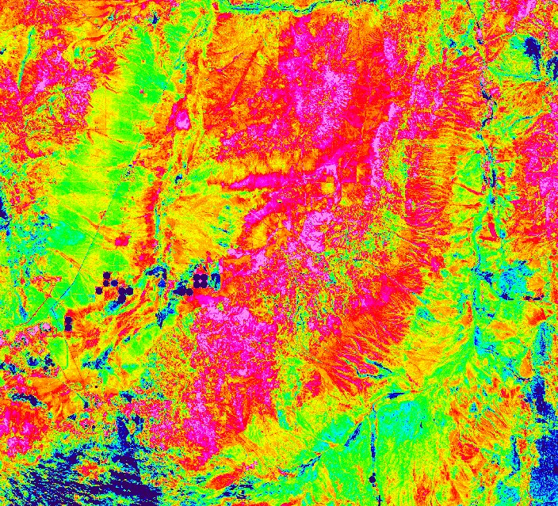
Why SpectraXplore™
We're not claiming any single competitor lacks these capabilities individually — SpectraXplore's difference is having all of them, integrated, in one exploration workflow.
| Capability | Generic GIS | Remote Sensing Software | SpectraXplore™ |
|---|---|---|---|
| Sentinel-2 / ASTER access | ✓ | ✓ | ✓ |
| Mineral mapping | Limited | ✓ | ✓ |
| 3,000+ spectral targets | — | Limited | ✓ |
| Alteration mapping | Limited | ✓ | ✓ |
| DEM analysis | ✓ | ✓ | ✓ |
| Lineament density | Manual / add-on | ✓ | ✓ |
| PCA & cluster analysis | Limited | ✓ | ✓ |
| Weight of Evidence | — | Limited | ✓ |
| Bayesian prospectivity | — | Limited | ✓ |
| Geochemistry integration | Limited | Limited | ✓ |
| Geophysics integration | Limited | Limited | ✓ |
| Integrated prospectivity map | — | Limited | ✓ |
Positioning reflects SpectraXplore's own feature set, not audited claims about any named competitor's product.
Pricing
Annual licensing, scoped to how you work. Talk to us if you need a custom multi-seat or data-heavy deployment.
For individual exploration professionals.
For consultants and small exploration teams.
For mining and exploration companies.
For multi-user deployments & custom workflows.
Request a Demo
Whether you're planning a first-pass regional screen, evaluating SpectraXplore™ against a known deposit, or seeking a license for an active exploration program — our team is composed of practising exploration geologists who understand your problem.
We respond to all qualified enquiries within one business day. For urgent project support, please indicate your target start date in your message.
Listed prices are a starting guide. Final license pricing is confirmed project-by-project based on study area, data volume, seat count and support requirements — contact sales to scope your program.